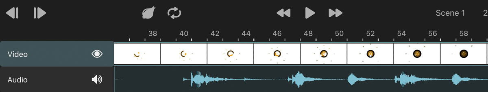
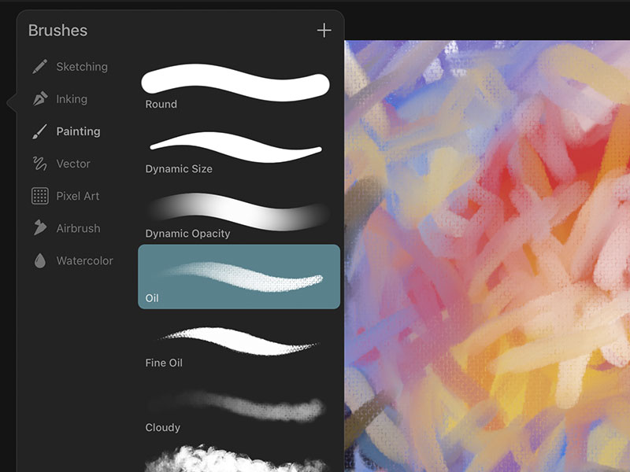
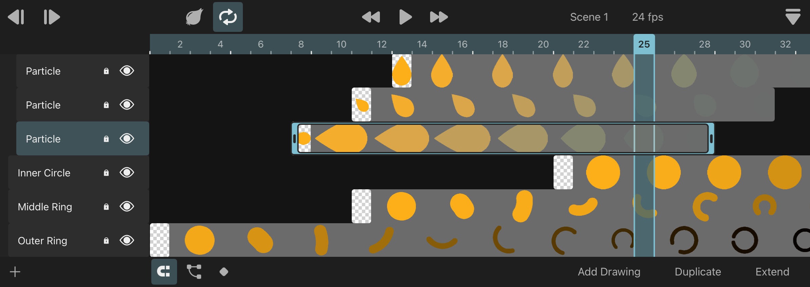

ToonSquid
Home
Download
Updates
Support
Discussions
ToonSquid
The powerful animation studio for your iPad.
Traditional Animation
Hand-drawn. Charming.
Keyframing
Animate layer properties. Define motion paths.
Privacy
No ads. No subscriptions. No tracking.
Text Layers
Emojis. Right-to-left text. Trimming animation.
Effects
Powerful. Animatable. Nondestructive.

Multimedia
Video and audio layers.
Vector Shapes
Gradients. Control points. Morphing animations.

Brushes
Beautiful. High performance. Fully customizable.
Symbols
Animate once. Reuse many times.
Vector Brushes
Sharp strokes at all scales.
Bones
Rigging. Inverse kinematics.
Layer masking
Clip to animated layer contents.
Easing Curves
Lots of customizable presets.
Camera
Dynamic movement.

Timeline
Powerful and flexible.